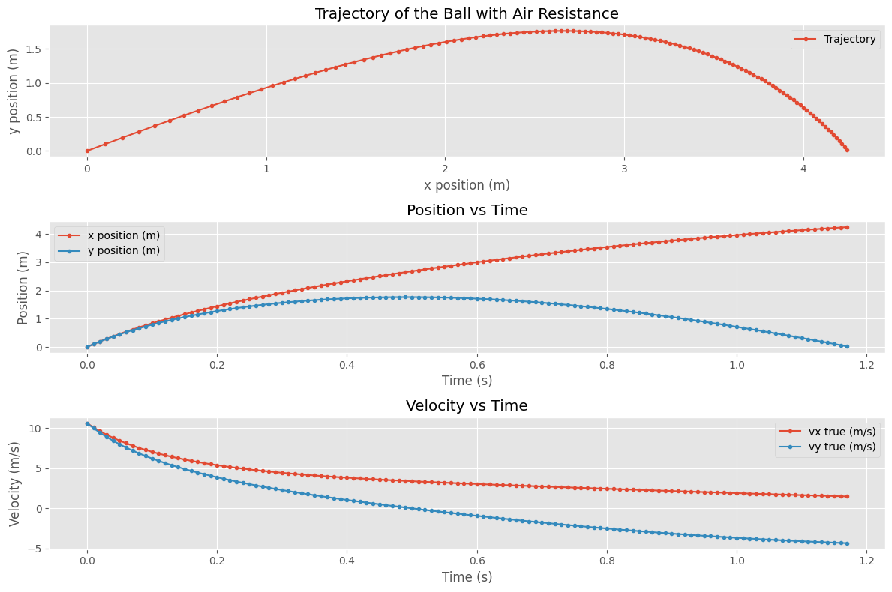

Getting Started with VS Code for Scientific Computing#
After this activity, you should be able to:
Set up VS Code for Python scientific computing
Use Jupyter notebooks in VS Code
Perform numerical differentiation using finite difference methods
Compare numerical results with analytical solutions
Explain the process of numerical differentiation to your peers
First, Install VS Code#
If you don’t have VS Code installed yet, this section will guide you through the process. It only takes a few minutes!
Step 1: Download#
Go to the official VS Code website:
👉 https://code.visualstudio.com/download
Choose the installer for your operating system:
macOS: Click the macOS link (Universal for both Intel and Apple Silicon chips)
Windows: Click “Windows” and download the User Installer
Linux: Choose the installer for your distribution (.deb, .rpm, or .tar.gz)
The download is small (~200 MB) and will only take a minute or two.
Step 2: Install#
Once downloaded:
On macOS:
Open the downloaded
.zipfile (it should auto-extract)Drag
Visual Studio Code.appto your Applications folderOpen Applications and double-click Visual Studio Code to launch it
On Windows:
Double-click the
.exeinstaller fileFollow the installation wizard (you can use default settings)
VS Code will launch automatically after installation
On Linux:
Follow the platform-specific instructions at https://code.visualstudio.com/docs/setup/linux
Step 3: Install Required Extensions#
Once VS Code is open, you’ll need two extensions to work with Jupyter notebooks and Python:
Jupyter Extension:
Click the Extensions icon on the left sidebar (looks like 4 squares)
Alternatively, you can open the Extensions panel by pressing
Ctrl+Shift+X(Windows/Linux) orCmd+Shift+X(macOS)
Search for
"Jupyter"Install “Jupyter” by Microsoft (the top result)
Python Extension:
In the same Extensions panel, search for
"Python"Install “Python” by Microsoft (the top result)
VS Code will prompt you to reload after installing—click Reload.
Step 4: Verify Python is Installed#
To check if Python is available on your system:
Open VS Code’s Terminal (View → Terminal, or Ctrl+`)
Type:
python --versionorpython3 --versionYou should see something like
Python 3.10.0(version number may vary)
If this doesn’t work, you may need to install Python. We recommend Python 3.10 or newer.
Libraries Needed for This Course#
We will work with several Python libraries throughout this course. Make sure you have the following installed:
numpy: For numerical computationsmatplotlib: For plotting and visualizationscipy: For scientific computing functionspandas: For data manipulation and analysis
Here we import the necessary libraries for our activities.
import numpy as np
import matplotlib.pyplot as plt
import pandas as pd
plt.style.use('ggplot')
Numerical Derivatives from Position Data#
The Physics: A Ball Tossed with Air Resistance#
Imagine you toss a ball at an angle. As we will learn, its motion can be modeled by:
where the second term is quadratic air resistance. This gives us the force and thus the accelerations in both \(x\) and \(y\) directions. We can use this to compute the velocity and position of the ball through [numerical integration]. Here, we only use this to generate synthetic data for our activity.
This is because in most experiments, we measure positions at different times. To get velocities or accelerations, we typically have to numerically differentiate our data. It is this generic process that is used widely in experimental physics or observational astronomy. Of course, there are a variety of methods to perform numerical differentiation that can yield different accuracies. For this activity, we will use a simple method called finite differences. in particular, we are going to use the forward difference method where we approximate derivatives using differences between successive data points.
Finite Differences: Computing Derivatives from Data#
If we have position data at times \(t_i\), we can approximate the velocity using:
and then the acceleration as:
This is called the forward difference method. This is because it uses the next data point to compute the derivative at the current point.
Basic Finite Difference Formulae
There are three common finite difference methods to approximate derivatives from discrete data:
Forward Difference:
\[f'(x_i) \approx \frac{f(x_{i+1}) - f(x_i)}{\Delta x}\]Backward Difference:
\[f'(x_i) \approx \frac{f(x_i) - f(x_{i-1})}{\Delta x}\]Central Difference:
\[f'(x_i) \approx \frac{f(x_{i+1}) - f(x_{i-1})}{2\Delta x}\]
Here, the forward difference uses the next point, the backward difference uses the previous point, and the central difference uses both neighboring points for a more accurate estimate.
Making Synthetic Data#
Below, we generate synthetic position data for a ball tossed at 45 degrees with air resistance. This simulates the “true” motion of the ball, which we will then use to practice numerical differentiation. Note, that we use Euler integration to generate the trajectory (we will learn more about this in Part 2!).

Your Turn: Analyze the Trajectory#
We have generated synthetic position data for a ball tossed at 45 degrees with air resistance. Your task is to analyze this data by plotting the position and numerically-derived accelerations. For the purposes of this activity, you can assume the time and position arrays are collected data. To perform this analysis, you may only use finite difference methods to compute the derivatives.
Arrays Provided#
t: Time array (in seconds)x: x-position array (in meters)y: y-position array (in meters)
# Arrays to be used in the activity
t = t_sim
x = x_data
y = y_data
Task#
Compute and plot the numerically-derived velocities and accelerations. What do you notice?
Plot the numerically-derived velocities and accelerations against the simulated “true” values. How well do they match
## Your Code Here
Exporting Your Notebook to PDF#
When you submit homework on Gradescope, you’ll need to convert this notebook to a PDF file. Here are your options:
Option A: Using VS Code Extensions (Easiest)#
Install the “Jupyter PDF Export” extension in VS Code:
Open the Extensions panel (Ctrl+Shift+X / Cmd+Shift+X)
Search for “Jupyter PDF”
Click Install on one of the popular ones (e.g., “Jupyter PDF Export” by Florian Wilhelm)
Once installed:
Right-click on your notebook file in the Explorer
Select “Export as PDF” (or similar option)
Choose where to save the file
Option B: Command Line (Using nbconvert)#
If you have Jupyter/nbconvert installed:
jupyter nbconvert --to pdf your_notebook.ipynb
Option C: Web Browser#
Open the notebook in Jupyter Lab or Jupyter Notebook (in a web browser)
Go to File → Download as → PDF via LaTeX (.pdf)
Option D: Print to PDF (Most Reliable Fallback)#
Open the notebook in VS Code
Use Ctrl+P (or Cmd+P) to open the Command Palette
Type “Print” and select “Print Current File” (or “Export as HTML” first, then print to PDF from your browser)
Submitting to Gradescope#
Follow the instructions in Submitting Assignments on Gradescope for combining your handwritten work and notebook PDF into a single file.
You do not need to submit this activity; it is for class practice only.